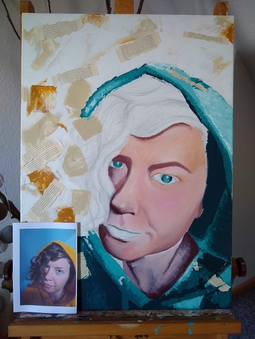
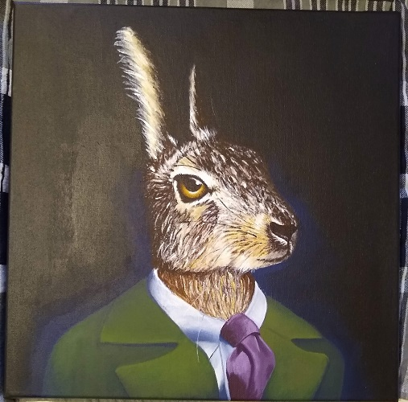

Folgend finden sich einige meiner Arbeiten
Coding
Bogenschießen e.V. - Website Übung
Diese Website entstand während meiner autodidaktischen Einarbeitung in HTML und CSS.
Bis zu einem gewissen Grad ist sie responsive.
Paintings
Selbstportrait, in progress
Mein erstes Selbstportrait. Ich wusste davor nicht, wie unglaublich schwer es ist sich selbst zu zeichnen/malen und
einen vernünftigen Hautton zu treffen. Das Bild ist (offensichtlich) noch nicht fertig.
Acryl auf Leinwand.
Sassy Rabbit, Geburtstagsgeschenk
Auftragsarbeit für eine Bekannte als Geburtstagsgeschenk.
Acryl auf Leinwand.
3. Dateityp
In Ermangelung eines dritten Dateityps aus meiner eigenen Sammlung, hier also ein gif:

Well done!